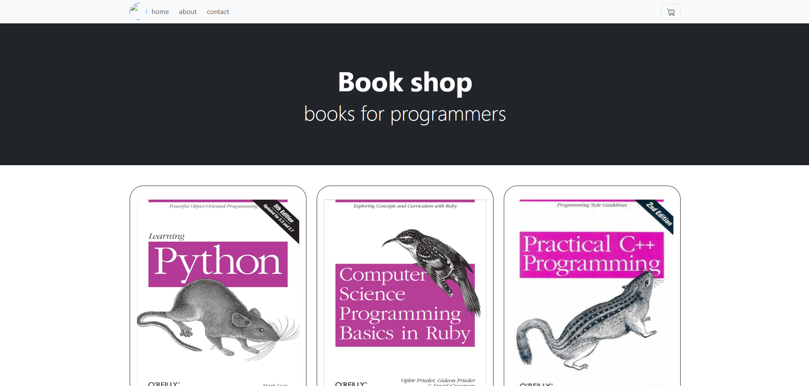
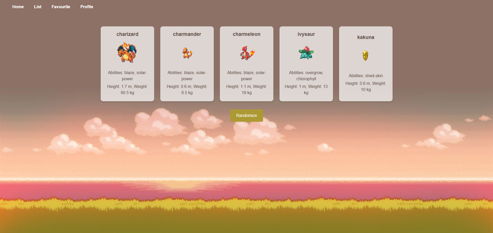
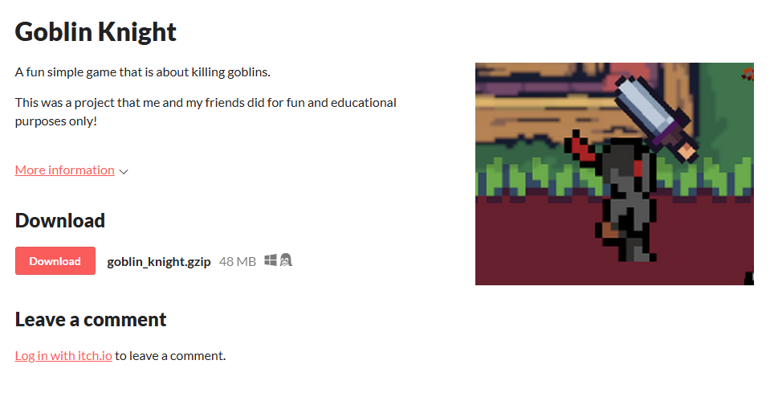
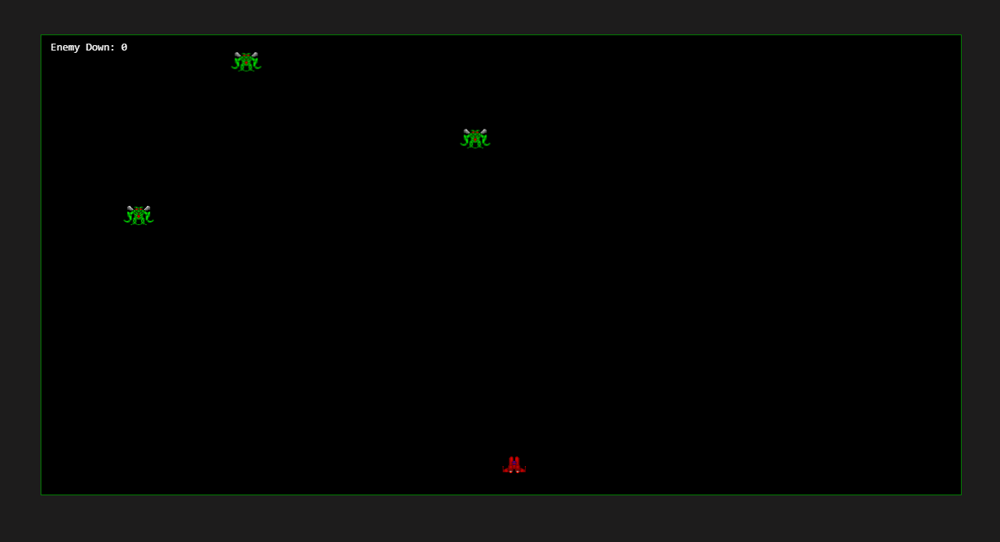
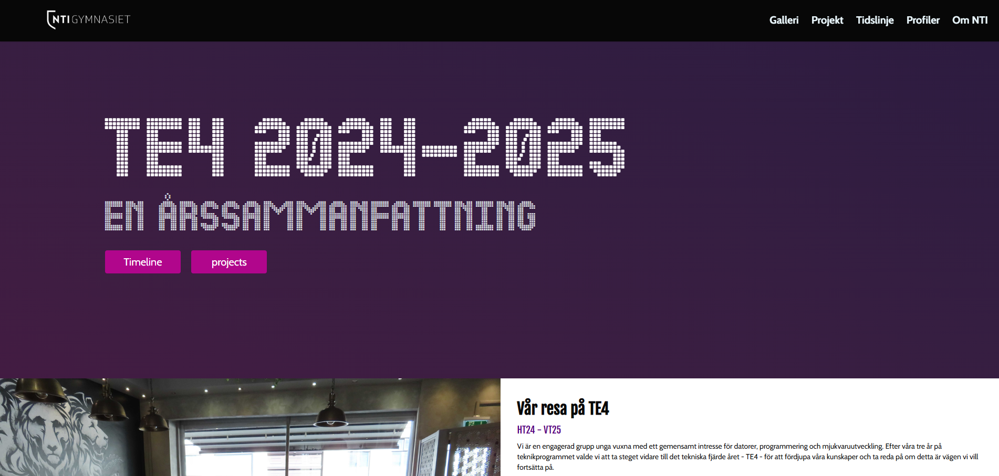
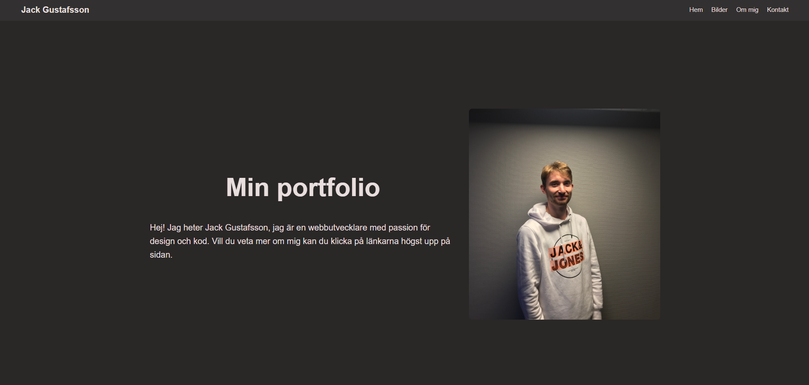
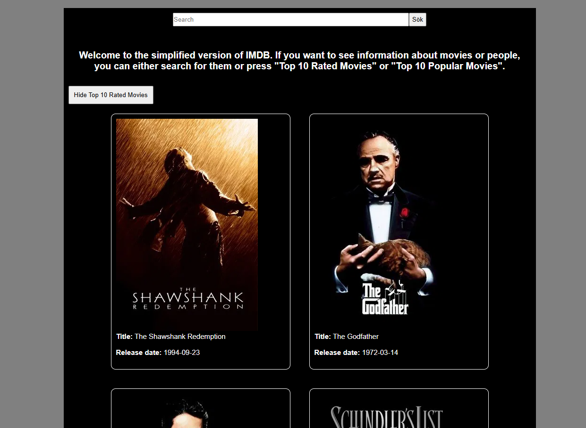
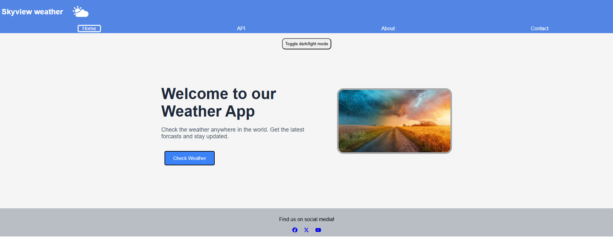

Exempel på projekt

Book Shop
Första T4-projektet där vi byggde en webbshop med grundläggande programmeringsspråk såsom HTML, CSS, JavaScript & Bootstrap.

Pokemon API
T4-projekt där vi byggde en informationssida med hjälp av tekniker såsom API (i det här fallet Pokemon) och React.

Goblin Knight
T4-projekt där vi skapade ett 2D-spel med spelmotorn Unity och programmeringsspråket C#.

Space Shooter
Ett individuellt T4-projekt där jag byggde ett simpelt 2d-spel med HTML, CSS och JavaScript.

TE4-årssajt
Sista T4-projektet där vi byggde en hemsida om just T4 och vad vi gjorde under året (med HTML, CSS, JavaScript etc).

Portfolio
En av de första projekten på Grit Academy där jag byggde en simpel portfolio i kursen HTML & CSS.

The MovieDB
Ett slutprojekt på den första JavaScript-kursen (på Grit Academy) där jag byggde förenklad version av IMDB.

Skyview Weather
Ett grupprojekt på Grit Academy där vi byggde en hemsida som presenterar väderdata i sökta städer (HTML, CSS, JavaScript).